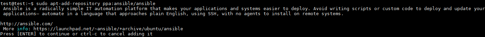
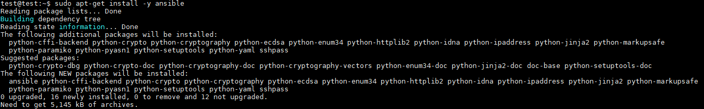
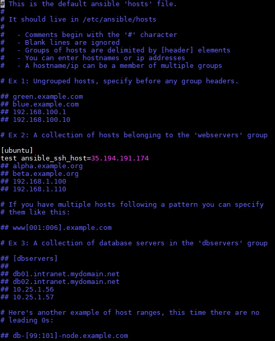
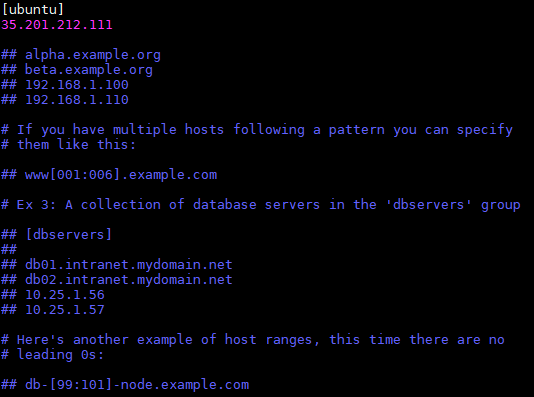
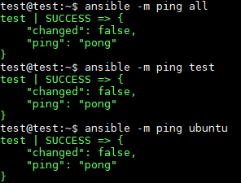
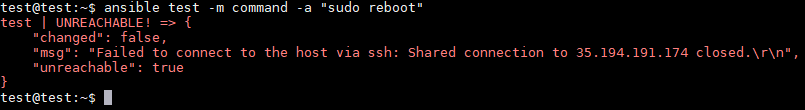

想要用 ansible 控制另外一台 ubuntu 機器很簡單，只要安裝好 ansible 設定好 host，並且 SSH 可以連線要被控制的 ubuntu 機器就可以了
1. 安裝 ansible
1 | 將 PPA 添加到系統中，中間需要案 Enter 接受 PPA 增加 |

1 | 更新並安裝 |

2. 配置 ansible
Ansible 通過 hosts 文件知道所有服務器，我們需要先設置此文件，然後才能開始與我們的其他機器連線
1 | host 文件路徑 |


3. 測試，如下圖就成功了接下來可以下其他指令對機器做控制
1 | ansible -m ping all |

4. 下指令方式操作機器
1 | ansible name -m command -a "command" |
如下圖下完重啟指令後會發現連不到，因為重新啟動會暫時連不到表示指令操作成功
